GridView의 선택된 셀과 행의 배경색을 설정한 예제입니다. GridView의 'focusMode' 속성의 설정에 따라 동작을 비교할 수 있습니다.
배경색과 관련된 속성은 'selectedRowColor', 'selectedRowOverColor', 'selectedCellColor', 'selectedCellOverColor'가 있습니다.
선택된 cell 또는 row의 배경색 비교 - focusMode : cell
선택된 cell 또는 row의 배경색 비교 - focusMode : row
선택된 cell 또는 row의 배경색 비교 - focusMode : both
선택된 cell 또는 row의 배경색 비교 - focusMode : none
GridView의 'focusMode' 속성의 설정 값에 따른 동작을 비교합니다. GridView의 셀을 클릭하고 선택된 셀 또는 행의 배경색을 확인합니다. 선택된 셀 또는 행에 마우스를 올렸을 때의 배경색을 확인합니다.
예제의 GridView에는 아래의 속성이 동일하게 지정되었으며, 각 속성에 지정된 배경색은 다음과 같습니다. - selectedCellColor : chocolate //선택된 셀의 배경색이 'chocolate'로 변경됩니다. - selectedCellOverColor : green //선택된 셀에 마우스를 오버하면 배경색이 'green'으로 변경됩니다. - selectedRowColor : yellow //선택된 행의 배경색이 'yellow'로 변경됩니다. - selectedRowOverColor : skyblue //선택된 행에 마우스를 오버하면 배경색이 'skyblue'로 변경됩니다.
예제 영역 '(기본설정) focusMode : cell'에 구성된 GridView에서 테스트합니다.1
STEP 1: GridView의 셀을 클릭합니다.
셀의 배경색이 'chocolate'으로 변경됩니다.
Image 1.브라우저(Chrome) 실행 예시
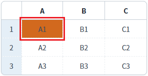
2
STEP 2: 선택된 셀에 마우스를 오버합니다.
마우스를 선택된 셀 영역 밖으로 이동합니다. 다시 선택된 셀로 오버합니다.
셀의 배경색이 'green'으로 변경됩니다.
Image 2.브라우저(Chrome) 실행 예시
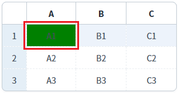
예제 영역 'focusMode : row'에 구성된 GridView에서 테스트합니다.1
STEP 1: GridView의 셀을 클릭합니다.
행의 배경색이 'yellow'로 변경됩니다.
Image 3.브라우저(Chrome) 실행 예시
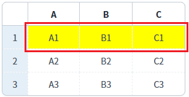
2
STEP 2: 선택된 셀에 마우스를 오버합니다.
마우스를 선택된 셀 영역 밖으로 이동합니다. 다시 선택된 셀로 오버합니다.
행의 배경색이 'skyblue'으로 변경됩니다.
Image 4.브라우저(Chrome) 실행 예시
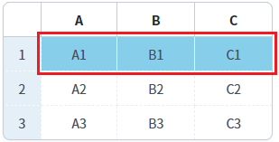
예제 영역 'focusMode : both'에 구성된 GridView에서 테스트합니다.1
STEP 1: GridView의 셀을 클릭합니다.
셀의 배경색이 'chocolate'으로 변경되고, 행의 배경색은 'yellow'로 변경됩니다.
Image 5.브라우저(Chrome) 실행 예시
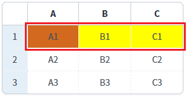
2
STEP 2: 선택된 셀에 마우스를 오버합니다.
마우스를 선택된 셀 영역 밖으로 이동합니다. 다시 선택된 셀로 오버합니다.
셀의 배경색이 'green'으로 변경되고, 행의 배경색이 'skyblue'으로 변경됩니다.
Image 6.브라우저(Chrome) 실행 예시
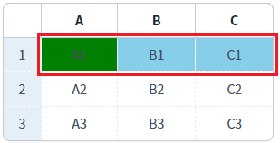
예제 영역 'focusMode : none'에 구성된 GridView에서 테스트합니다.1
STEP 1: GridView의 셀을 클릭합니다.
셀과 행의 배경색이 변경되지 않습니다.
Image 7.브라우저(Chrome) 실행 예시
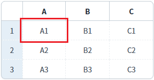
2
STEP 2: 선택된 셀에 마우스를 오버합니다.
마우스를 선택된 셀 영역 밖으로 이동합니다. 다시 선택된 셀로 오버합니다.
속성 rowMouseOverColor의 지정값이 배경색으로 표시됩니다. (속성 'rowMouseOver'가 'true'로 설정된 경우입니다.)
Image 8.브라우저(Chrome) 실행 예시
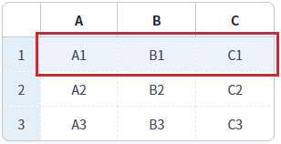
GridView의 속성을 정의합니다.
[필수] selectedCellColor="설정 값"
선택된 cell의 배경색
예시1) selectedCellColor="chocolate"
예시2) selectedCellColor="#D2691E"
[필수] focusMode="cell 또는 both"
[default: cell, row, both, none]
(옵션 설명)
cell : (기본 값) 셀을 선택.
both : 셀과 행을 모두 선택.
Image 9.웹스퀘어 스튜디오의 Component View - 속성 설정 예시
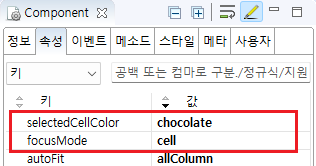
Example 1.Source
<!-- gridView 의 소스 본문 예시 --> <w2:gridView focusMode="cell" selectedCellColor="chocolate"> <!-- 중략 --> </w2:gridView>
GridView의 속성을 정의합니다.
[필수] selectedCellOverColor="설정 값"
선택된 cell의 마우스 오버 시 배경색
예시1) selectedCellOverColor="green"
예시2) selectedCellColor="#008000"
[필수] focusMode="cell 또는 both"
[default: cell, row, both, none]
(옵션 설명)
cell : (기본 값) 셀을 선택.
both : 셀과 행을 모두 선택.
Image 10.웹스퀘어 스튜디오의 Component View - 속성 설정 예시
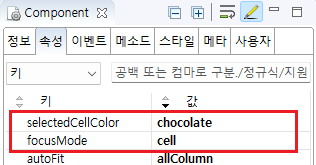
Example 2.Source
<!-- gridView 의 소스 본문 예시 --> <w2:gridView focusMode="cell" selectedCellOverColor="green"> <!-- 중략 --> </w2:gridView>
GridView의 속성을 정의합니다.
[필수] selectedRowColor="설정 값"
선택된 row의 배경색
예시1) selectedRowColor="yellow"
예시2) selectedRowColor="#FFFF00"
[필수] focusMode="row 또는 both"
[default: cell, row, both, none]
(옵션 설명)
row : 행을 선택.
both : 셀과 행을 모두 선택.
Image 11.웹스퀘어 스튜디오의 Component View - 속성 설정 예시
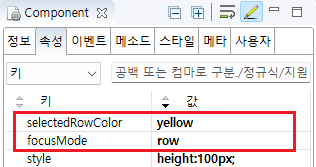
Example 3.Source
<!-- gridView 의 소스 본문 예시 --> <w2:gridView focusMode="row" selectedRowColor="yellow"> <!-- 중략 --> </w2:gridView>
GridView의 속성을 정의합니다.
[필수] selectedRowOverColor="설정 값"
선택된 row의 배경색
예시1) selectedRowOverColor="skyblue"
예시2) selectedRowOverColor="#00BFFF"
[필수] focusMode="row"
[default: cell, row, both, none]
Image 12.웹스퀘어 스튜디오의 Component View - 속성 설정 예시
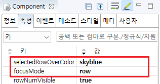
Example 4.Source
<!-- gridView 의 소스 본문 예시 --> <w2:gridView focusMode="row" selectedRowOverColor="skyblue"> <!-- 중략 --> </w2:gridView>
focusMode
selectedCellColor
selectedCellOverColor
selectedRowColor
selectedRowOverColor